Học máy
Bài 6: Giảm chiều dữ liệu
Trường ĐH Công nghệ – Đại học Quốc gia Hà Nội
Nội dung
1.
Tổng quan
Học có giám sát vs. không giám sát
Học có giám sát
- Có nhãn \(Y\)
- Mục tiêu: dự đoán \(Y\)
- Đánh giá bằng sai số
- Hồi quy, phân lớp
Học không giám sát
- Chỉ có \(X_1,\ldots,X_p\)
- Tìm cấu trúc ẩn
- Khó đánh giá hơn
- Phân cụm, giảm chiều
Học không giám sát
Không có nhãn đầu ra — mang tính khám phá:
- Không có câu hỏi đích rõ ràng như học có giám sát.
- Khó đánh giá chất lượng kết quả.
- Dữ liệu không nhãn dễ thu thập hơn.
- Thường dùng cho phân cụm, giảm chiều, phát hiện bất thường.
Ví dụ: phân nhóm ung thư, hành vi mua sắm, gợi ý phim.
Khám phá dữ liệu trực quan
- Dữ liệu 1D: histogram, boxplot, mật độ.
- Dữ liệu 2D: scatter plot, density plot.
- Dữ liệu > 2D: cần giảm chiều để nhìn được cấu trúc.
PCA
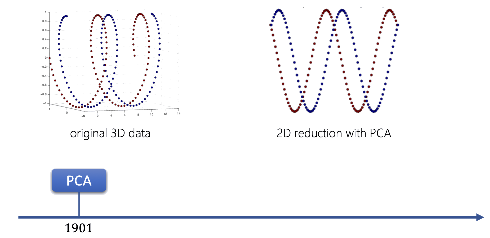
Sammon mapping
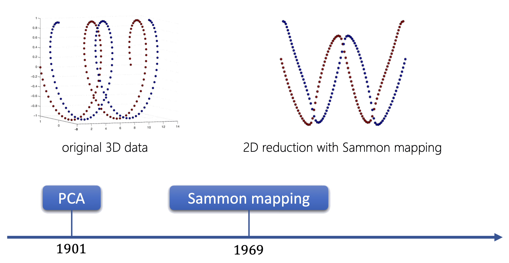
t-SNE
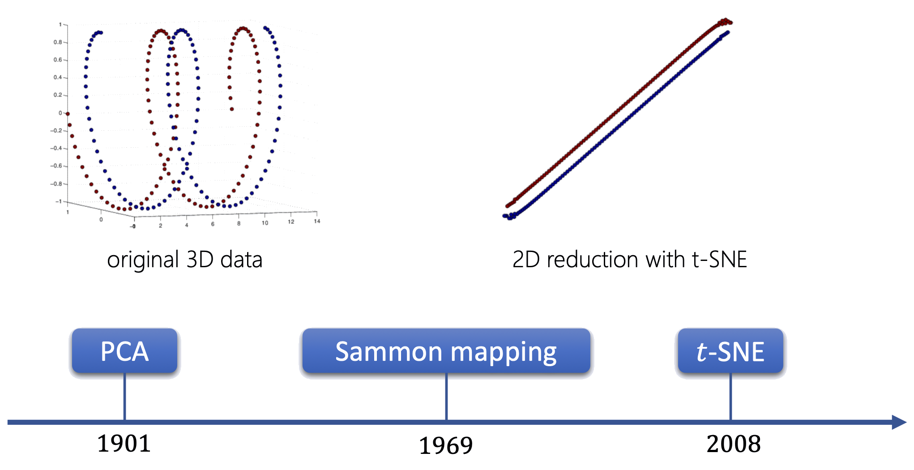
Động lực giảm chiều
- Khó trực quan hóa khi \(p > 3\).
- Nhiều chiều tương quan gây khó cho thuật toán.
- Tính toán trở nên tốn kém.
Lời nguyền chiều dữ liệu:
- Cần rất nhiều dữ liệu để mô tả phân phối.
- Khoảng cách giữa các điểm dần mất ý nghĩa.
Mục tiêu: giảm chiều nhưng vẫn giữ cấu trúc chính.
2.
Phân tích thành phần chính
(Principal Component Analysis)
Ý tưởng trực quan
Dữ liệu dân số và chi tiêu quảng cáo của 100 thành phố:
- Dữ liệu gần tuyến tính theo một hướng
- PC1: hướng có phương sai lớn nhất
- PC2: vuông góc với PC1
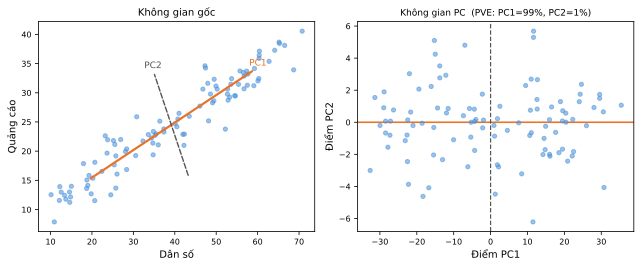
Dân số vs. quảng cáo — hướng PC1 và PC2
Định nghĩa
Thành phần chính thứ nhất (first principal component, first PC) là tổ hợp tuyến tính của các biến đã chuẩn hóa trung bình:
\[ Z_1 = \sum_{j=1}^{p} \phi_{j1}(X_j - \bar{X}_j) \]
- \(\phi_{j1}\): hệ số tải (loading) — mỗi biến gốc đóng góp bao nhiêu
- \(z_{i1}\): điểm PC (score) — toạ độ mới của quan sát \(i\)
- PC thứ \(m\) vuông góc với mọi PC trước: \(\sum_j \phi_{jm}\phi_{jk} = 0\) với \(k < m\)
Bài toán tối ưu PCA — phát biểu
Tìm hệ số tải \(\boldsymbol{\phi}_1 = (\phi_{11}, \ldots, \phi_{p1})\) sao cho phương sai hình chiếu lớn nhất:
- Vì sao ràng buộc \(\|\boldsymbol{\phi}_1\| = 1\)? Không cố định độ dài thì có thể nhân \(\boldsymbol{\phi}_1\) với hằng số bất kỳ để phương sai → \(\infty\). Chuẩn hoá tách "hướng" khỏi "biên độ".
- Bài toán này có nghiệm đẹp liên quan đến vector riêng — slide kế.
Bài toán tối ưu PCA — viết theo ma trận hiệp phương sai
Triển khai \(z_{i1} = \boldsymbol{\phi}_1^\top (\mathbf{x}_i - \bar{\mathbf{x}})\):
với ma trận hiệp phương sai mẫu \(\mathbf{S} = \frac{1}{n}\sum_i (\mathbf{x}_i - \bar{\mathbf{x}})(\mathbf{x}_i - \bar{\mathbf{x}})^\top\) (cỡ \(p \times p\), đối xứng, nửa xác định dương).
Bài toán nay chỉ phụ thuộc vào \(\mathbf{S}\) — toàn bộ thông tin về \(\boldsymbol{\phi}_1\) gói gọn trong \(\boldsymbol{\phi}_1^\top \mathbf{S}\, \boldsymbol{\phi}_1\).
Bài toán tối ưu PCA — giải bằng Lagrangian
Lagrangian (1 ràng buộc đẳng thức → 1 hệ số \(\lambda\)):
Điều kiện dừng \(\partial L / \partial \boldsymbol{\phi}_1 = 0\):
- \(\boldsymbol{\phi}_1\) là vector riêng của \(\mathbf{S}\), \(\lambda\) là trị riêng tương ứng.
- Phương sai hình chiếu tại nghiệm: \(\boldsymbol{\phi}_1^\top \mathbf{S}\boldsymbol{\phi}_1 = \lambda \boldsymbol{\phi}_1^\top \boldsymbol{\phi}_1 = \lambda\) → phương sai = trị riêng.
- Để phương sai lớn nhất → chọn \(\boldsymbol{\phi}_1\) là vector riêng ứng với trị riêng lớn nhất của \(\mathbf{S}\).
PCA như biến đổi tọa độ

PCA = phép xoay hệ trục từ \((X_1, X_2, X_3)\) sang \((Z_1, Z_2, Z_3)\). Trái → phải: cùng dữ liệu, hai góc nhìn.
- Trục mới sắp theo phương sai giảm dần. PC1 dài nhất (phương sai lớn nhất), PC3 ngắn nhất — đó là chiều thừa có thể bỏ ⇒ giảm chiều.
- Tính chất hệ trục PC: các PC trực giao đôi một và không tương quan (\(\mathrm{Cov}(Z_i, Z_j) = 0,\; i \ne j\)) — khác với \(X_1, X_2, X_3\) vốn có tương quan.
Ví dụ: Tập dữ liệu USArrests
Tỷ lệ bắt giữ trên 100.000 dân tại các bang Mỹ (1973), 50 mẫu, 4 biến:
- Murder: số vụ giết người
- Assault: số vụ tấn công
- UrbanPop: % dân đô thị
- Rape: số vụ hiếp dâm
| Biến | PC1 | PC2 |
|---|---|---|
| Murder | 0.536 | −0.418 |
| Assault | 0.583 | −0.188 |
| UrbanPop | 0.278 | 0.873 |
| Rape | 0.543 | 0.167 |
Biplot PCA — USArrests
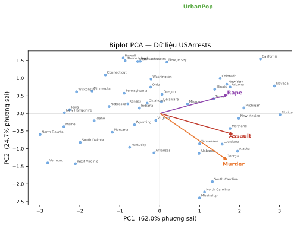
Biplot — mỗi điểm là một tiểu bang
Diễn giải kết quả PCA — USArrests
- Murder, Assault, Rape tương quan cao.
- UrbanPop ít tương quan hơn.
PC1 → tỷ lệ tội phạm
Cao: CA, NV, FL | Thấp: WV, Dakotas
PC2 → mức độ đô thị hóa
Cao: CA, NJ | Thấp: Carolinas, MS
Diễn giải này đọc trực tiếp từ biplot ở slide trước.
Chọn số thành phần chính
Tỷ lệ phương sai được giải thích (PVE):
\[ \text{PVE}_m = \frac{\text{Var}(Z_m)}{\sum_{j=1}^{p}\text{Var}(X_j)} \]
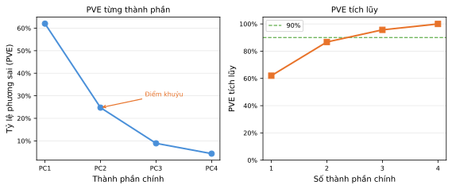
Biểu đồ PVE — tìm điểm khuỷu
- Trực quan hóa: thường chọn 2 hoặc 3 PC.
- Tiền xử lý: chọn \(k\) sao cho PVE tích lũy đủ lớn.
- Tìm điểm khuỷu trên scree plot.
- Nếu dùng cho dự đoán: có thể chọn \(k\) bằng kiểm định chéo.
3.
Chia tỷ lệ đa chiều
(Multidimensional Scaling)
Động lực — Hạn chế của PCA
PCA là phép chiếu tuyến tính — không thể "mở" cấu trúc phi tuyến (xoắn ốc, đa tạp cong).
- Các điểm xa nhau theo cấu trúc thực có thể bị chiếu chồng lên nhau.
- MDS bảo toàn khoảng cách thay vì phương sai → không bị giới hạn bởi phép chiếu tuyến tính.
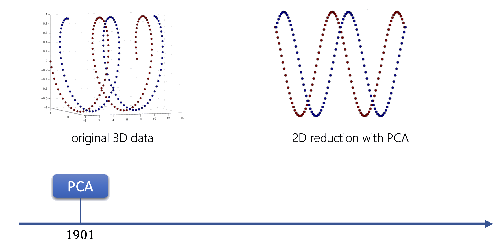
PCA chiếu dữ liệu xoắn ốc 3D → 2D
Chia tỷ lệ đa chiều (MDS)
Tìm \(z_1,\ldots,z_N \in \mathbb{R}^k\) sao cho khoảng cách chiều thấp xấp xỉ khoảng cách gốc.
Gọi \(d_{ii'}\) là khoảng cách gốc, \(\|z_i - z_{i'}\|\) là khoảng cách chiều thấp. Kruskal-Shepard cực tiểu hoá:
\[ \min_{z_1,\ldots,z_N} \sum_{i \neq i'} \left(d_{ii'} - \|z_i - z_{i'}\|\right)^2 \]
Mọi cặp điểm đều quan trọng như nhau, dù gần hay xa.
Sammon Mapping
Cực tiểu hoá với trọng số ưu tiên cặp gần:
\[ \min_{z_1,\ldots,z_N} \sum_{i \neq i'} \frac{(d_{ii'} - \|z_i - z_{i'}\|)^2}{d_{ii'}} \]
Chia cho \(d_{ii'}\) → cặp gần nhau (\(d_{ii'}\) nhỏ) bị phạt nặng hơn khi sai lệch → bảo toàn cấu trúc cục bộ tốt hơn.
Dữ liệu 3D (xoắn ốc) → 2D bằng Sammon mapping
Quan hệ giữa MDS và PCA
Kruskal-Shepard và Sammon bảo toàn khoảng cách. Nếu thay bằng bảo toàn tích vô hướng (classical MDS):
\[ \min_{z_1,\ldots,z_N} \sum_{i,i'}\left(\underbrace{\langle x_i - \bar{x},\; x_{i'} - \bar{x} \rangle}_{\text{tích vô hướng gốc}} - \underbrace{\langle z_i - \bar{z},\; z_{i'} - \bar{z}\rangle}_{\text{tích vô hướng chiều thấp}}\right)^2 \]
Nghiệm của bài toán này chính xác là PCA — chiếu lên \(k\) vector riêng đầu tiên.
Ý nghĩa: PCA là trường hợp đặc biệt của MDS. Nhưng MDS tổng quát hơn — chỉ cần ma trận khoảng cách, không cần dữ liệu gốc \(x_i\).
MDS phi tham số (Non-metric MDS)
Kruskal-Shepard và Sammon cần giá trị chính xác của khoảng cách. Non-metric MDS chỉ cần thứ hạng: nếu \(d_{ab} < d_{cd}\) trong gốc thì cũng muốn \(\|z_a - z_b\| < \|z_c - z_d\|\) trong chiều thấp.
\[ \min_{z_i,\;\theta} \frac{\sum_{i \neq i'}\left(\|z_i - z_{i'}\| - \theta(d_{ii'})\right)^2}{\sum_{i \neq i'}\|z_i - z_{i'}\|^2} \]
- \(\theta\): hàm tăng đơn điệu bất kỳ — chỉ giữ thứ tự, không cần giữ giá trị.
- Tối ưu luân phiên: cố định \(z_i\) tìm \(\theta\), rồi cố định \(\theta\) tìm \(z_i\).
Ví dụ: MDS trên virus cúm
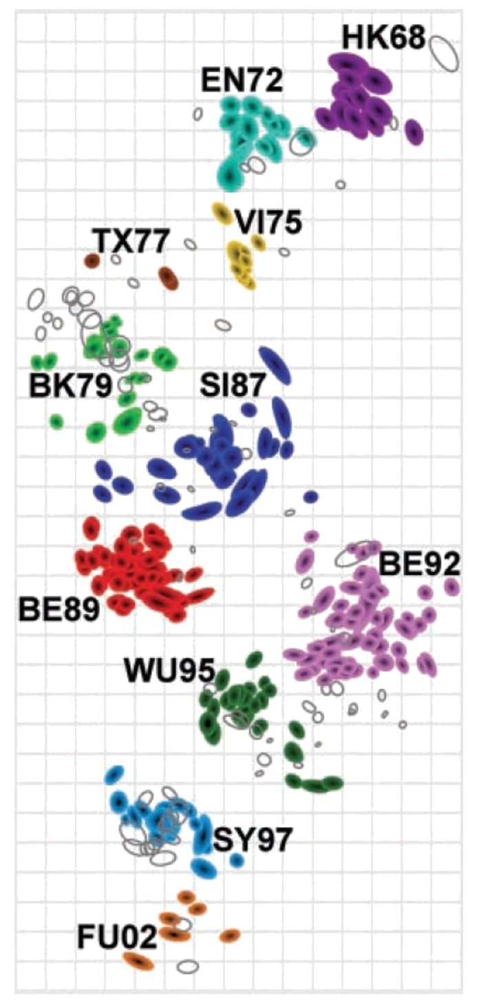
Kháng nguyên virus cúm (79D → 2D), Smith et al., Science 2004
4.
t-SNE
📖 Toàn bộ phần này là tự học
Nhúng láng giềng ngẫu nhiên (SNE)
MDS bảo toàn khoảng cách giữa mọi cặp điểm. SNE đổi góc nhìn: với mỗi điểm, tính xác suất láng giềng — điểm nào gần thì xác suất cao, xa thì thấp.
- \(P\): phân phối xác suất trong không gian gốc
- \(Q\): phân phối xác suất trong chiều thấp
- Mục tiêu: tìm toạ độ chiều thấp sao cho \(Q \approx P\)
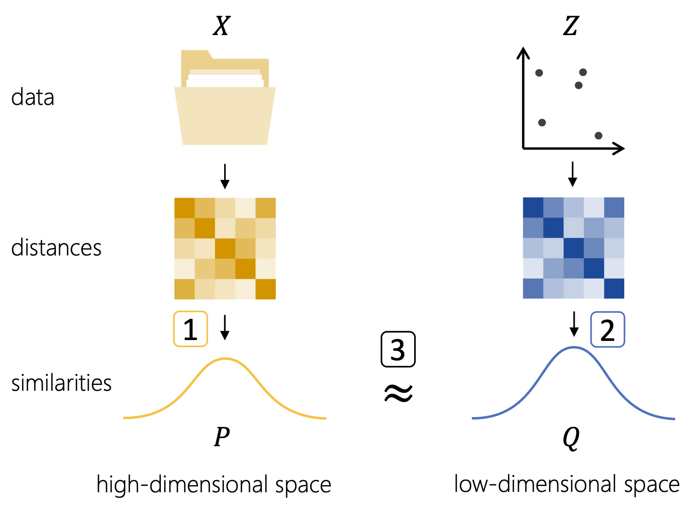
Hinton & Roweis, 2002
Độ tương đồng chiều cao
Dùng Gaussian quanh mỗi điểm \(x_i\):
\[ p_{j|i} \propto \exp\!\left(-\frac{\|x_j - x_i\|^2}{2\sigma_i^2}\right) \]
\[ P_i \propto \mathcal{N}(x_i,\, \sigma_i^2) \]
- \(x_j\) càng gần \(x_i\), \(p_{j|i}\) càng lớn.
- \(\sigma_i\) được chọn theo perplexity.
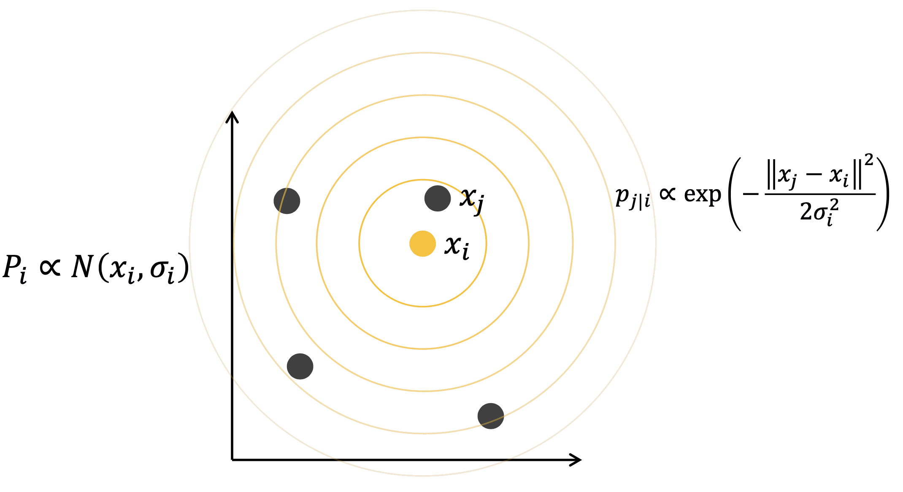
\(x_j\) gần → \(p_{j|i}\) cao
Độ tương đồng chiều cao
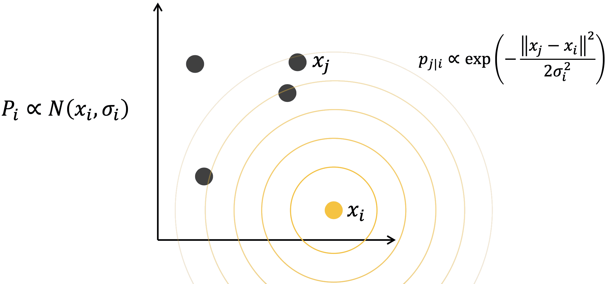
\(x_j\) xa → \(p_{j|i}\) thấp
Điểm càng xa thì độ tương đồng càng nhỏ.
Chọn Perplexity
Chọn \(\sigma_i\) sao cho mỗi điểm có perplexity cố định:
\[ \text{Perp}(P_i) = 2^{H(P_i)} \]
- Vùng đặc (nhiều điểm gần) → \(\sigma_i\) nhỏ
- Vùng thưa (ít điểm gần) → \(\sigma_i\) lớn
- Perplexity thường dùng: 5 – 50
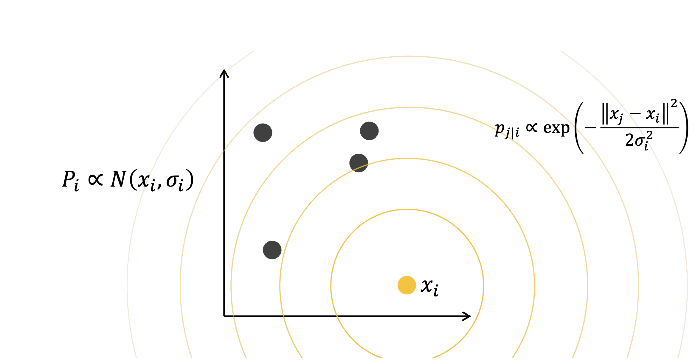
Vùng đặc dùng \(\sigma_i\) nhỏ, vùng thưa dùng \(\sigma_i\) lớn.
Độ tương đồng chiều thấp
SNE gốc dùng Gaussian trong không gian chiều thấp:
\[ q_{j|i} \propto \exp\!\left(-\|z_j - z_i\|^2\right) \]
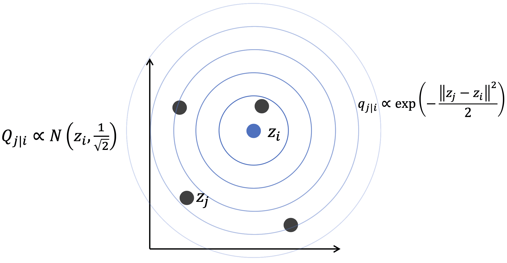
\(Q_{j|i} \propto \mathcal{N}(z_i,\tfrac{1}{\sqrt{2}})\) — Gaussian trong không gian chiều thấp
Hàm mục tiêu:
\[ C = \sum_i KL(P_i \| Q_i) = \sum_i \sum_j p_{j|i} \log \frac{p_{j|i}}{q_{j|i}} \]
- Tối thiểu hóa bằng gradient descent.
So sánh phân phối \(P_i\) và \(Q_i\)
Mục tiêu: tìm \(z_i\) sao cho \(Q_i \approx P_i\) cho mọi điểm \(i\).
t-SNE ưu tiên bảo toàn các láng giềng gần.
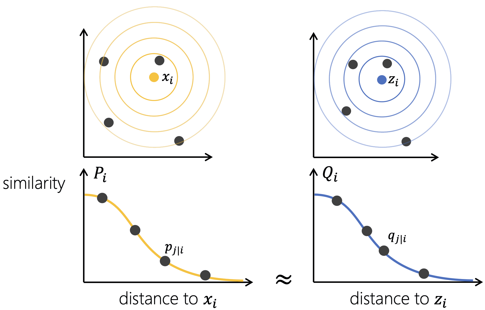
Độ tương đồng \(P_i\) (cam) và \(Q_i\) (xanh) theo khoảng cách
Tất cả phân phối \(P_n\) và \(Q_n\)
Mỗi điểm \(i\) có một phân phối riêng \(P_i\) và \(Q_i\).
Tổng hàm mục tiêu: \[ C = \sum_i KL(P_i \| Q_i) \]
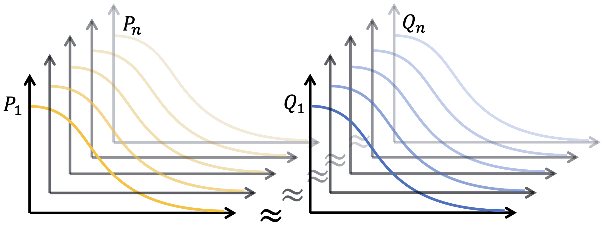
Tất cả phân phối \(P_1,\ldots,P_n\) (cam) và \(Q_1,\ldots,Q_n\) (xanh)
Phân kỳ KL
Đo "khoảng cách" giữa hai phân phối — bất đối xứng:
\[ KL(P \| Q) = \sum_j p_j \log \frac{p_j}{q_j} \geq 0 \]
- Bằng 0 khi và chỉ khi \(P = Q\).
- Phạt nặng khi \(q_{j|i}\) nhỏ mà \(p_{j|i}\) lớn.
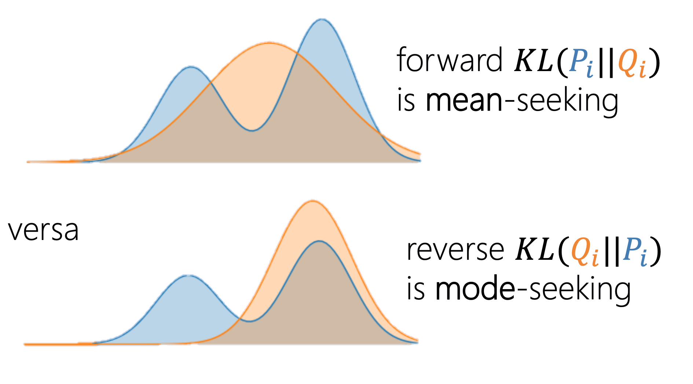
KL thuận (mean-seeking) vs. KL ngược (mode-seeking)
Vấn đề chật chội (Crowding Problem)
Vấn đề: Không gian chiều thấp có ít chỗ hơn nhiều.
- Các điểm trung bình và xa dễ bị dồn cục vào trung tâm.
- Cấu trúc toàn cục bị méo đi.
Giải pháp: dùng phân phối t với đuôi nặng hơn.
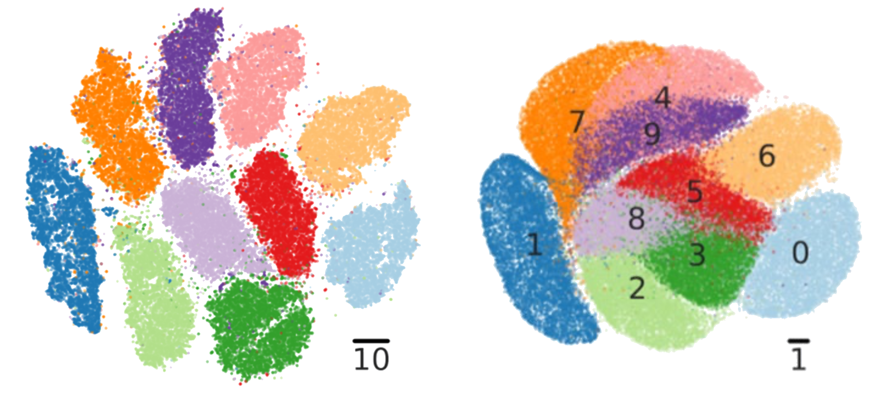
Cùng dữ liệu MNIST — tỷ lệ 10× vs 1×
(Kobak
et al. 2019)
Vấn đề chật chội — Toán học
Trong không gian 2D, không đủ chỗ để bảo toàn tất cả khoảng cách:
- Chiếu từ cao chiều xuống thấp chiều luôn làm méo một số khoảng cách.
- Không có cách nào bảo toàn đồng thời mọi khoảng cách.
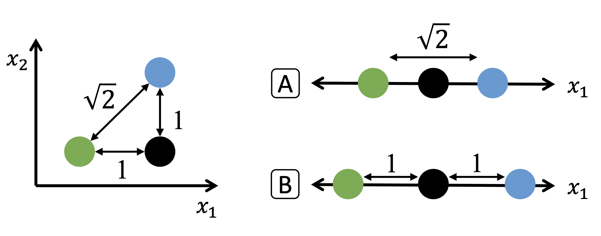
Chiều cao vs. chiều thấp: khoảng cách không bảo toàn được
Từ SNE đến t-SNE — Đối xứng hóa
Symmetric SNE:
\[ p_{ij} = \frac{p_{j|i} + p_{i|j}}{2n}, \qquad p_{ii} = 0 \]
\[ C = KL(P \| Q) = \sum_{i,j} p_{ij} \log \frac{p_{ij}}{q_{ij}} \]
Một hàm mục tiêu duy nhất cho toàn bộ cặp điểm.
Từ SNE đến t-SNE — Phân phối t
Không gian chiều thấp:
\[ q_{ij} = \frac{(1 + \|z_i - z_j\|^2)^{-1}}{\sum_{k \neq l}(1 + \|z_k - z_l\|^2)^{-1}} \]
- Dùng phân phối t bậc 1.
- Đuôi nặng hơn Gaussian.
- Giảm vấn đề chật chội.
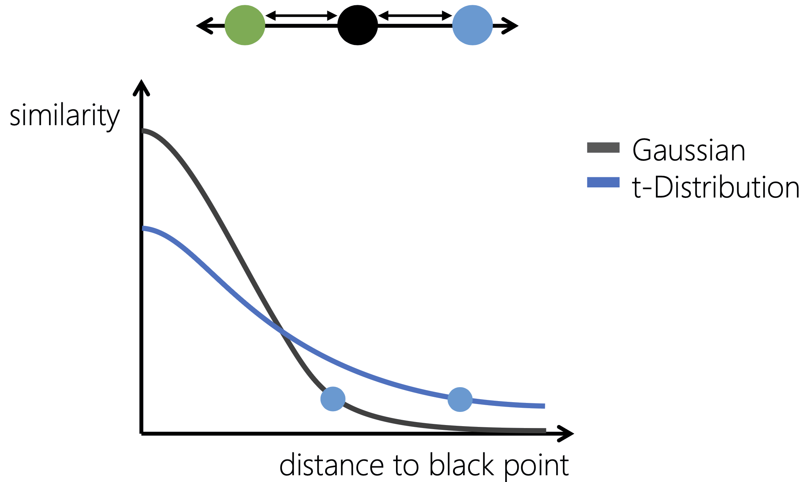
Gaussian vs. phân phối t
Thuật toán t-SNE — Tóm tắt
- Tính \(P\) từ dữ liệu gốc.
- Khởi tạo ngẫu nhiên các \(z_i\).
- Tính \(Q\) trong không gian chiều thấp.
- Tối thiểu hóa \(KL(P\|Q)\).
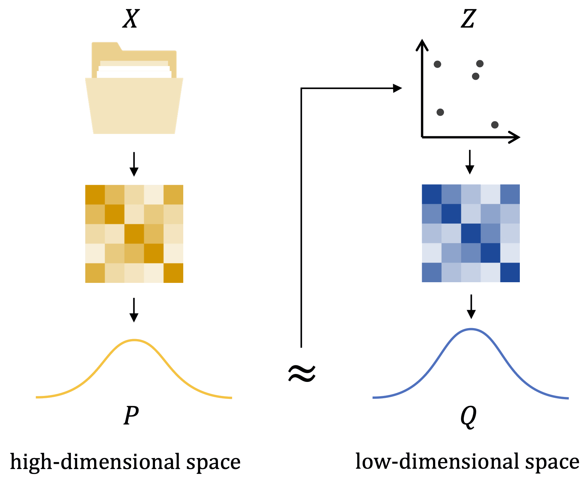
t-SNE: Sơ đồ tổng quan
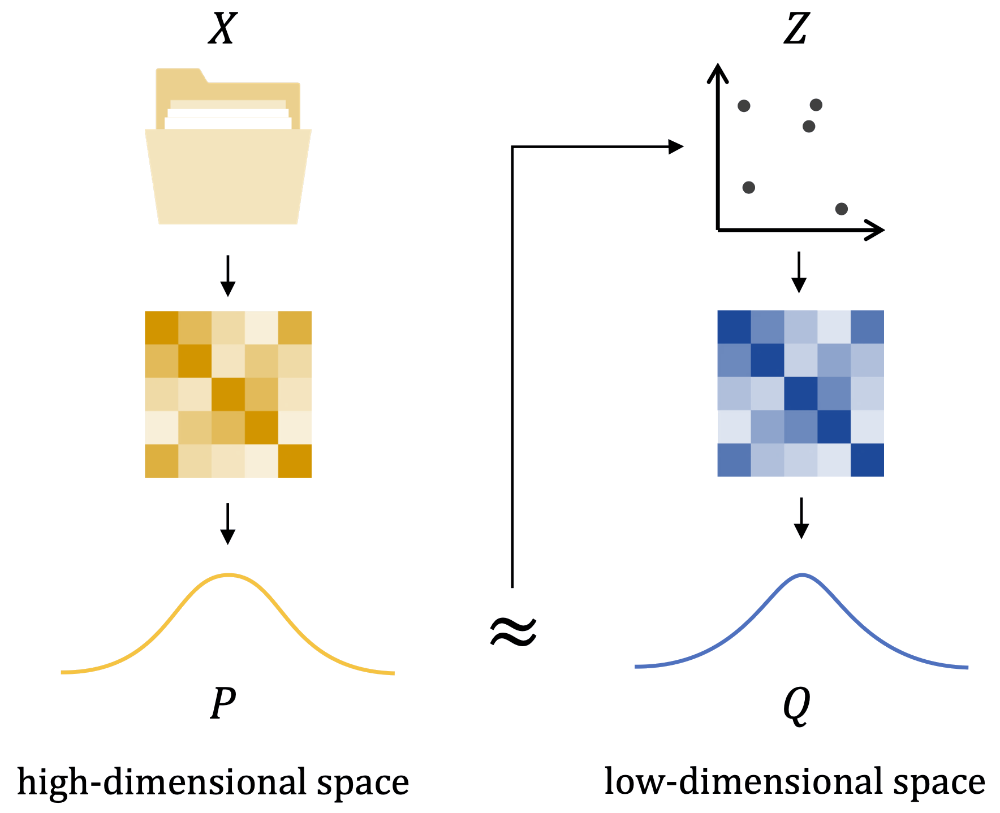
Dữ liệu \(X\) → khoảng cách → xác suất \(P\) ≈ \(Q\) ← xác suất ← biểu diễn \(Z\) (van der Maarten & Hinton, 2008)
Diễn giải khác:
Bảo toàn đồ thị láng giềng
t-SNE cố làm cho đồ thị láng giềng trong không gian chiều thấp giống với đồ thị láng giềng ban đầu.
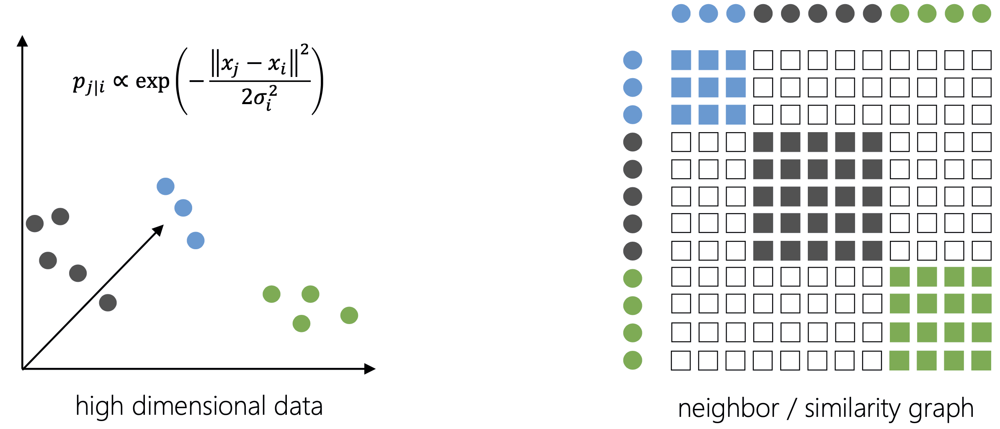
Bước 1: Dữ liệu chiều cao → đồ thị tương đồng/láng giềng
Diễn giải: Chiều cao vs. chiều thấp
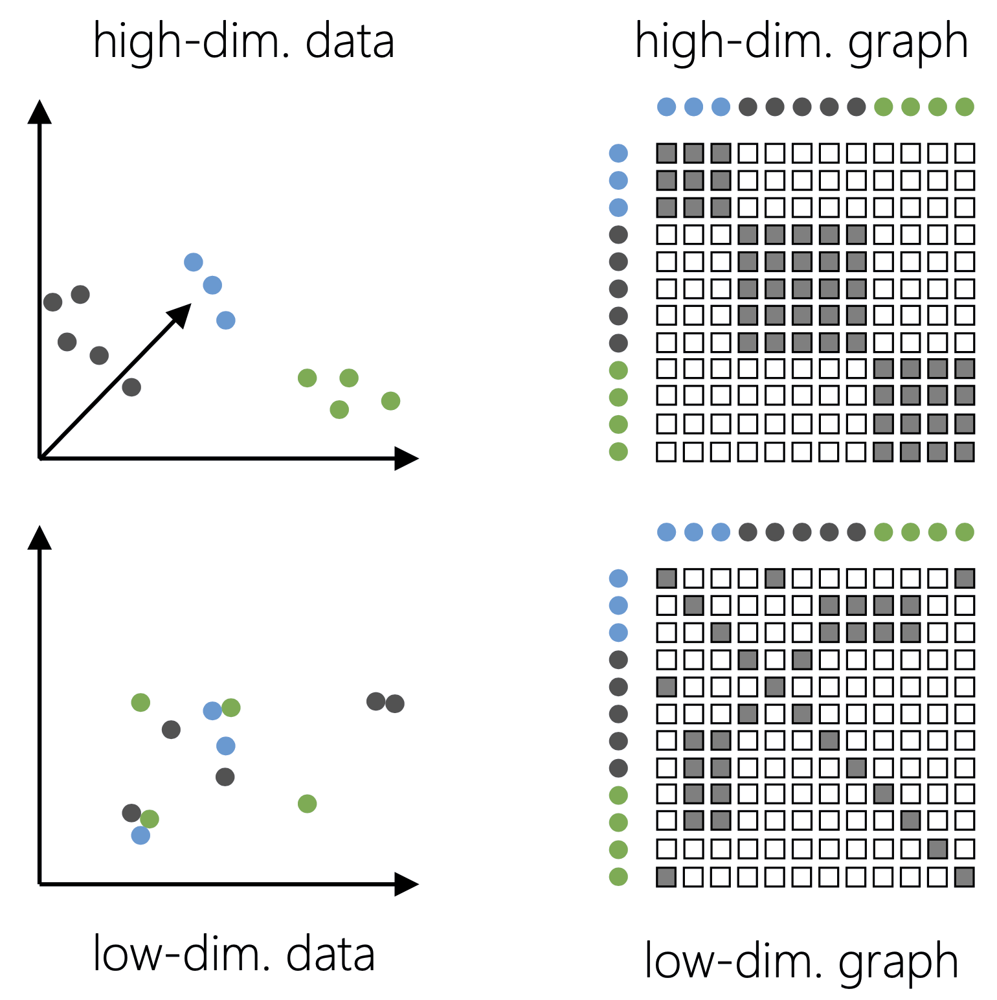
Đồ thị láng giềng chiều cao (trên) và chiều thấp (dưới).
Ứng dụng t-SNE: Dữ liệu liên kết từ
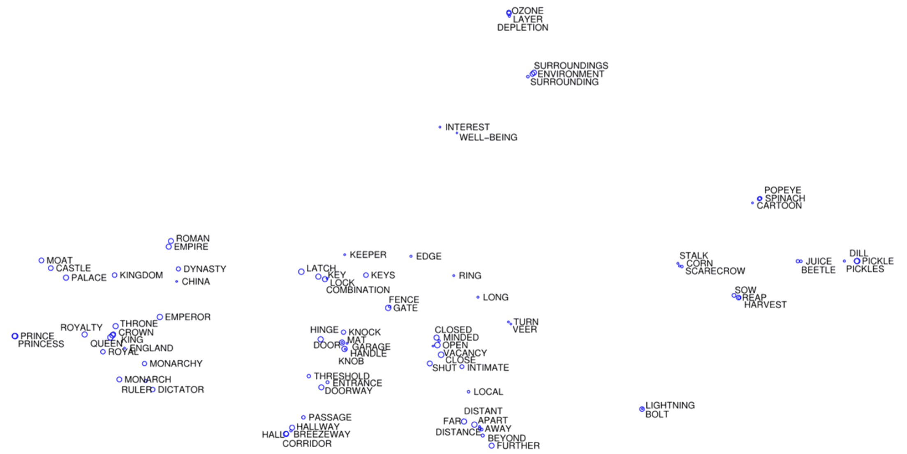
van der Maaten, lvdmaaten.github.io/tsne
Ứng dụng t-SNE: Phim Netflix
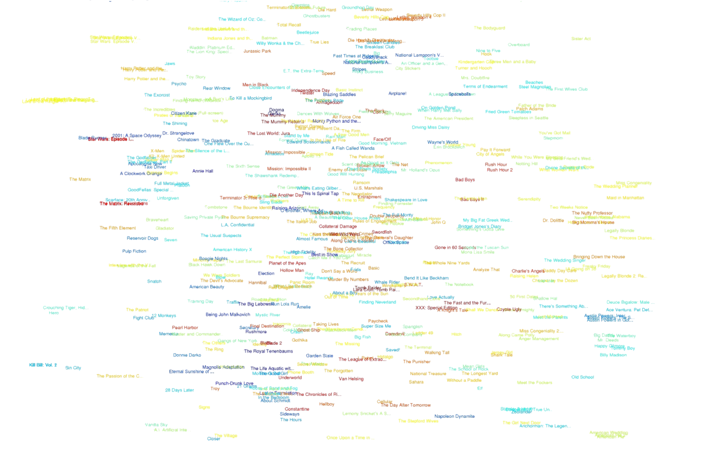
Ứng dụng t-SNE: Tế bào não chuột
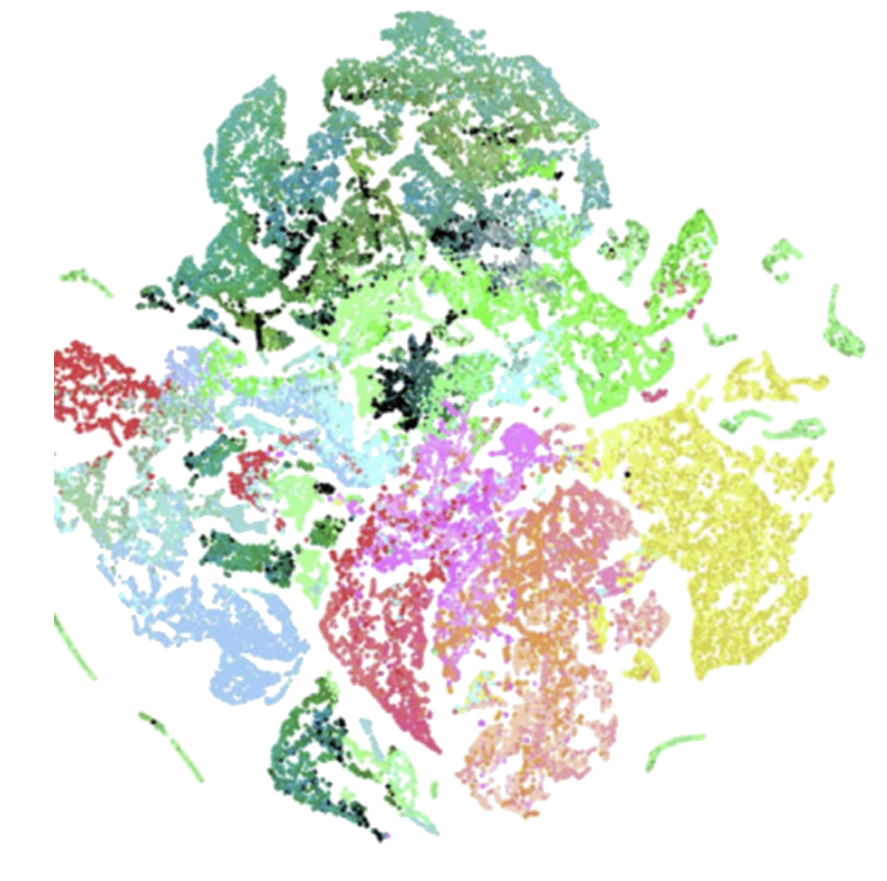
Mahfouz et al., 2014
t-SNE vs. Sammon vs. Isomap vs. LLE
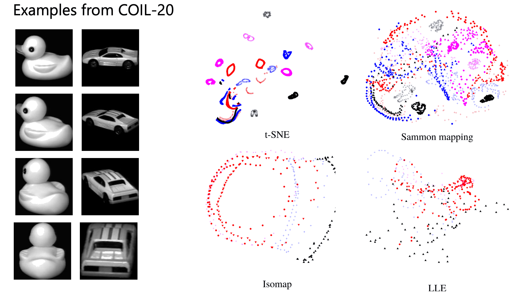
van der Maaten & Hinton, 2008 — t-SNE tách cụm rõ ràng nhất
Ưu điểm của t-SNE
- Rất mạnh cho trực quan hóa dữ liệu chiều cao.
- Bảo toàn cấu trúc láng giềng cục bộ tốt.
- Giảm vấn đề chật chội nhờ đuôi nặng.
- Hữu ích để khám phá cụm.
Hạn chế của t-SNE
- Kích thước và khoảng cách cụm không có nghĩa tuyệt đối.
- Nhạy cảm với perplexity.
- Chủ yếu hữu ích cho nhúng 2D hoặc 3D.
- Không mạnh về cấu trúc toàn cục.
- Khó nhúng thêm điểm mới.
Thay thế: UMAP
Ảnh hưởng của Perplexity
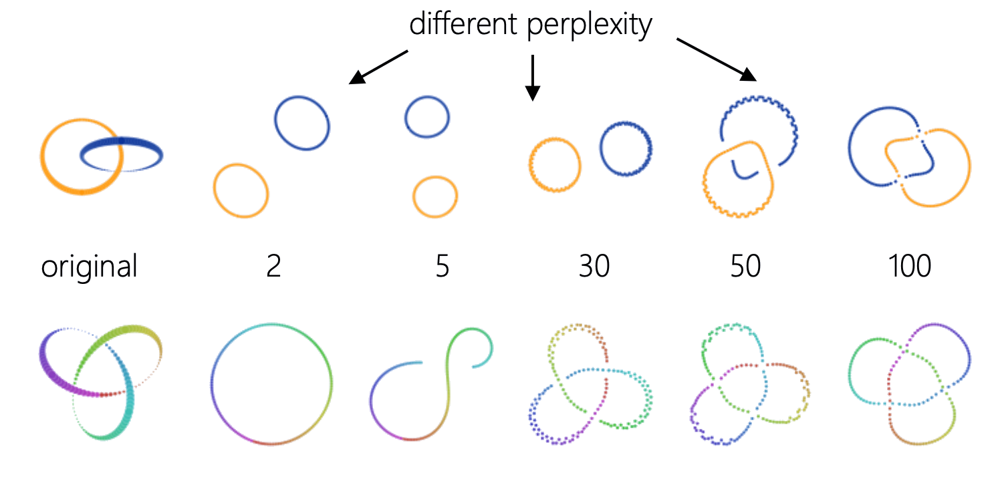
Cùng dữ liệu, perplexity = 2, 5, 30, 50, 100 — kết quả rất khác nhau (distill.pub)
Perplexity ảnh hưởng mạnh đến kết quả.
Tổng kết
So sánh các phương pháp
PCA
Bảo toàn: phương sai toàn cục
Tham số: số PC \(k\)
Tốt cho cấu trúc tuyến tính và tiền xử lý.
MDS
Bảo toàn: khoảng cách
Tham số: số chiều \(k\)
Hữu ích khi chỉ có ma trận khoảng cách.
t-SNE
Bảo toàn: láng giềng gần
Tham số: perplexity
Mạnh nhất cho trực quan hóa và khám phá cụm.
Giảm chiều giúp trực quan hóa và đơn giản hóa dữ liệu.
Tài liệu tham khảo
- ISLR, Chương 12.
- ESL, Chương 14.
- van der Maaten & Hinton (2008), Visualizing Data using t-SNE.
- Muandet & Vreeken, lecture slides.